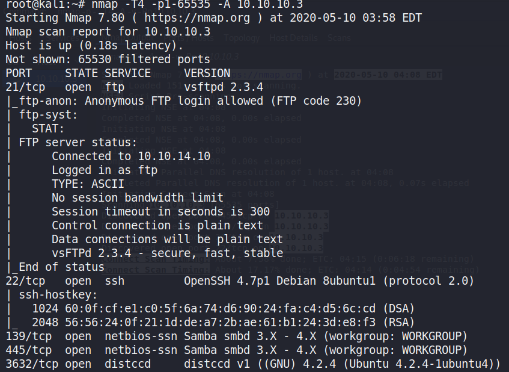

10.10.10.3
Walkthrough:
https://github.com/Bengman/CTF-writeups/blob/master/Hackthebox/lame.md
Create a xml using nmap (Zenmap) and search for vulnerabilities using
searchsploit
searchsploit --nmap -v lame_full.xml
